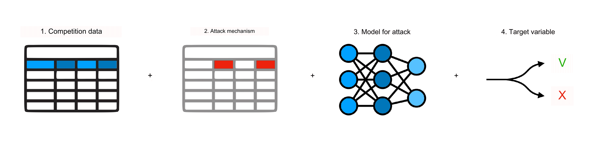
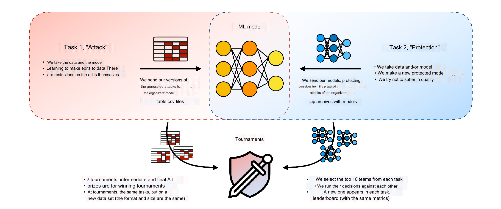
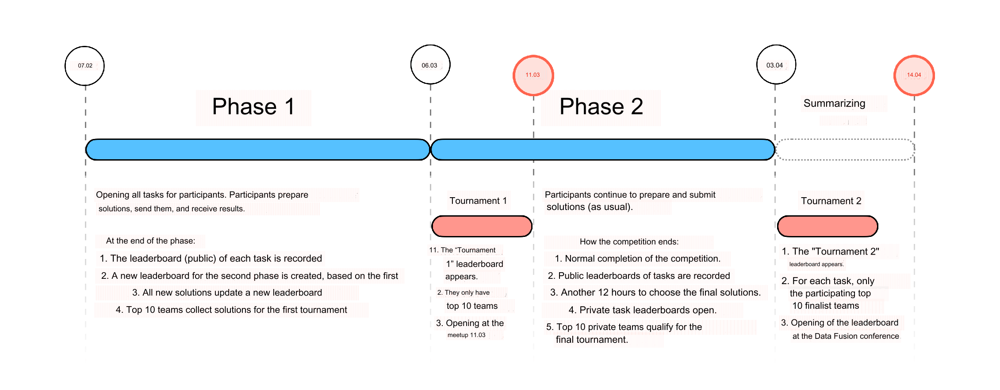

Contest legeng
A key feature of the Data Fusion Contest 2023 is its tournament format. There are 2 closely related tasks in the competition: Attack and Defense. You can participate in either of them, including both tasks at once. Both tasks are based on common inputs and materials:
- In both tasks, the same dataset of transactions with target (default 90_12) is used;
- The competition uses only one attack mechanism: input data corruption. It is assumed that you modify the data that will be used in the output stage;
- The attack model is both the target in the Attack task and the starting point in the Defense task;
- Both tasks deal with binary classification models of the same target variable (credit default risk).
- Despite the similarity in materials, both tasks have fundamental differences:
- Solution format: in the Attack task, the format - .csv files; in the Defense task, it is archives with models and code;
- Metrics: in the Attack task, the difference in ROC-AUC relative to the attacked model is calculated; in the Defense task, the harmonic mean of ROC-AUC on the original and attacked data is calculated;
- Approaches: finding the best edits in different families of models versus increasing model robustness.
Tournament
If we were talking about the usual competition format, the participants of each task competed primarily with the organizers' materials:
- In the Attack task: prepared attacks only against the organizers' pre-prepared model;
- In the Defense task: defended the models against attacks prepared in advance by the organizers.
In order for participants to compete against each other, tournaments are organized in the event:
The essence of tournaments is that the best solutions to both problems are run against each other:
- Solutions of the Attack task now attack solutions from the Protect task instead of the Organizer model;
- Solutions of the Defense problem now run on solutions from the Attack problem instead of the organizers' attacks;
- There will be 2 tournaments: an intermediate tournament in the middle of the competition and a final tournament at the end of the competition;
- All prize money is awarded according to the results of the tournaments.
Separate new datasets will be used for tournaments, similar to how solutions are run on private test data. The data will have the same format and size so that the solutions to the Defense problem will work correctly on the solutions to the Attack problem on the new data.
Tournament Rules
So that the tournaments can be held in a reasonable amount of time, the 10 teams with the best results on the leaderboards of each task are selected to participate in the tournaments. The conduct of the tournament is as follows:.
- Ten teams from each problem are selected for the tournaments (total of 20 teams);
- Two solutions from each selected team participate (total 40 solutions);
- Each solution of one task is run against each solution of the second task (total 20*20 = 400 runs);
- For each solution, the same metrics are counted as in that solution's task: the ROC-AUC difference for Attack and the harmonic mean ROC-AUC for Defense;
- For each team's solution, the result of that solution is the normal average of the 20 runs against all solutions of the opposing task;
- Each team's final result is the best of their two solutions;
- After the end of each tournament, each task publishes a new leaderboard with the tournament results of those who participated in it: a separate leaderboard in the Attack task (with 10 tournament participants from the Attack task) and a separate leaderboard in the Defense task (with 10 tournament participants from the Defense task);
- Based on the results of the first Tournament, a correction for “self-shooting” has been introduced. If the same team participates in the Tournament from both tasks, the results of both solutions on matched pairs are not taken into account when calculating the average result of these solutions (point 5).
How to get to the tournament
Two conditions must be met to qualify for the tournament:
- (general) Your team is in the top 10 on the leaderboard used for tournament selection. For the intermediate tournament this is the top-10 on the public leaderboard as of 06.03.2023 0:00 (Moscow time). For the final tournament it is the top-10 on the private leaderboard as of 03.04.2023 12:00 (Moscow time);
- (only for the Attack task) If your team is in the top 10, you need to run the selected solutions on the new tournament data. The data will be transmitted directly by the organizer's representatives. It is necessary to run the solutions and transfer the result within 24 hours. This must be done in both tournaments.
No further action is required on the part of the participants in the Protection task.
Contest timeline
The overall competition and tournament timeline is as follows:
Attack task
Somehow you have at your disposal a bank classification model that predicts customer default. It is a recurrent neural network that takes as input the last 300 customer transactions and a binary classification of customers. You do not have access to the full dataset on which the model was trained, but you do have a small, labelled sample of customers with accompanying materials.
Moreover, you even more mysteriously have the ability to partially modify the transaction data that this model will receive as input. Your task is to take an unmapped file with client transactions and make attacking changes to it, satisfying a number of constraints
- Budget: you can change a maximum of 10 transactions per client. You can change all 10 transactions or a smaller number of transactions;
- Targets: you can change the MCC codes and amount of each transaction, either together or separately, but you cannot change anything else. You cannot delete transactions, or add new ones;
- Limits:After you make a change, the amount in each modified transaction must be within a predetermined range between the minimum and maximum of the corresponding MCC code.
Solution format
You need to create an algorithm capable of creating a new tabular .csv file by transaction sequence that will change the predictions in the model given to you.
This is a tabular competition with the markup of the .csv file provided to you. The leaderboards of the competition will be used to qualify (select) for tournaments. Before each of the tournaments, successful qualifiers (top 10 on the leaderboard) will have 24 hours to run their selected solutions on new tournament test files that will be provided to them directly by the organisers.
Verification of solutions
- Solutions are checked automatically. First, your solutions are validated against the constraints. After successfully passing the validation, your solution is used to run the model provided to you on the attacked data.
- The competition metric is the ROC-AUC Diff between the result of the model on the original data and its result on your solution.
- The public/private ratio in the competition is 50/50. Winners of the competition are determined based on the results of participation in tournaments. Selection for the intermediate tournament is based on the results on the public leaderboard, and for the final tournament - on the private leaderboard.
Attack metric
The quality will be assessed using the difference in ROC-AUC:
ROC-AUC Diff = ROC-AUC original - ROC-AUC attacked
The higher this metric, the more effective your attack on the model. The meaning of the metric:
- It is the damage to the ROC-AUC metric inflicted by your edits to the data…
- ...for the model run on this data…
- ...compared to the original data, if there was no attack.
Defence task
As in the Attack problem, you have at your disposal a bank RNN binary classification model predicting customer default. You do not have access to the full amount of data on which the model was trained. However, you do have a small marked-up sample of customers with accompanying materials. And you know exactly what format this model will be attacked in - changing the small number of transactions fed to the model as input.
Now your task is to build a good model for the same classification task, while making it secure against such vulnerabilities. It is not in your power to prevent data hacking, but it is entirely within your power to try to protect the model from such troubles.
Solution format
You need to build a classifier model using an existing banking model and the marked-up transaction data provided to you, in a code container format. Specifically, using the transaction data, train a model that uses information about the last 300 transactions to binary classify customers.
This is a container competition with preparation of solutions in the form of an archive with code, which will be autonomously run on closed test data. The leaderboards of the competition will be used for qualification (selection) for the tournaments. Since the format is containerised, the selection for each of the tournaments is automatic, for participants in the first 10 places at the moment of qualification for the tournament. Qualification for the intermediate tournament is done on the public part of the leaderboard; qualification for the final tournament is done on the private part.
Verification of solutions
- Solutions are tested automatically. The launch takes place in an isolated environment with no internet access on fully closed test data that is not shared with the participants.
- In both the public and private parts of the ranking, solutions are run on two sets of inputs: raw transactions, and raw transactions with attacks prepared in advance by the organisers that satisfy the requirements and constraints for the Attack task.
- The ratio of public/private in the competition is 50/50. The winners of the competition are determined by the results of participation in tournaments. Selection for the intermediate tournament is based on the results on the public leaderboard, and for the final tournament - on the private leaderboard.
- The competition metric is Mean Harm ROC-AUC. It is the Mean Harmonic ROC-AUC on the original data and on the attacked data. The metric combines a trade-off between increasing the defensibility of the model and potentially decreasing its quality.
Defence metric
The quality will be evaluated using the harmonic mean of two ROC-AUC:
Mean Harm ROC-AUC = 2 / (1 / ROC-AUC original + 1 / ROC-AUC attacked)
The purpose of the metric is to account for the trade-off between increasing the model's security, by calculating the ROC-AUC on the attacked data, and the potential decrease in the model's quality, by calculating the ROC-AUC on the original data without attacks.
Data description
Participants have access to several data sets and artifacts used in both tasks:
- Training data of client transactions in table
.csvformat:transactions.zip(27 MB) - The target variable for training data
train_target.csv(27 KB) - Provided RNN binary classifier model in pickle format
model.zip(1 MB)
Supporting data for working with data:
- Dictionary with decryption of MCC transaction codes
mcc_codes.csv(0.2 MB) - Dictionary with decryption of transaction currency codes
currency_rk.csv(1 KB)
Description of transaction attributes:
user_id- Bank customer IDmcc_code- mcc code of the transaction, description in mcc_codes.csvcurrency_rk- transaction currency, decryption in currency_rk.csvtransaction_amt- amount in transaction currencytransaction_dttm- date and time of the transaction
Specific materials for attack task
Specific materials for defence task
How datasets organized in general
Useful papers
The topic of attacking and defending machine learning models in applications is just starting to develop now. To inspire you with approaches and ideas, we would like to share with you the most interesting articles on the topic, selected during the preparation of the competition:
- [Arxiv, 3 May 2022] Don't sweat the small stuff, classify the rest: Sample Shielding to protect text classifiers against adversarial attacks, Jonathan Rusert, Padmini Srinivasan
- [Arxiv, 15 Jun 2021] Adversarial Attacks on Deep Models for Financial Transaction Records, Ivan Fursov, Matvey Morozov, Nina Kaploukhaya, Elizaveta Kovtun, Rodrigo Rivera-Castro, Gleb Gusev, Dmitry Babaev, Ivan Kireev, Alexey Zaytsev, Evgeny Burnaev
- [Arxiv, 20 Nov 2019] Defense Methods Against Adversarial Examples for Recurrent Neural Networks, Ishai Rosenberg, Asaf Shabtai, Yuval Elovici, Lior Rokach
- [Arxiv, 8 Apr 2016] Crafting Adversarial Input Sequences for Recurrent Neural Networks, Nicolas Papernot, Patrick McDaniel, Ananthram Swami, Richard Harang
- [ICL Thesis, October 2021] Robustness against adversarial attacks on deep neural networks, Liu Yi-Ling
Solution format
You need to create an algorithm capable of creating a new tabular .csv file by transaction sequence that will change the predictions in the model given to you.
This is a tabular competition with the markup of the .csv file provided to you. The leaderboards of the competition will be used to qualify (select) for tournaments. Before each of the tournaments, successful qualifiers (top 10 on the leaderboard) will have 24 hours to run their selected solutions on new tournament test files that will be provided to them directly by the organisers.